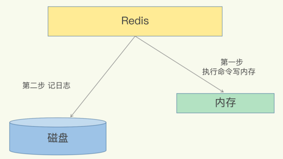
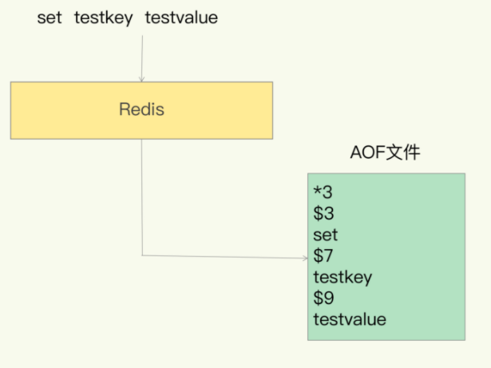
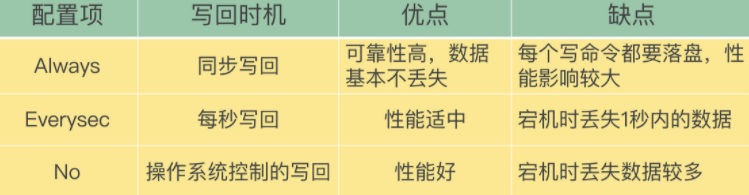
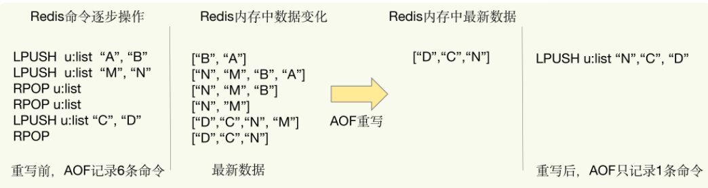
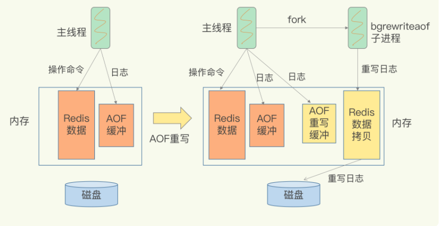

第四节 Redis宕机，如何避免数据丢失：AOF(Append Only File)日志
Redis用在什么业务场景，作缓存使用，因为它把后端数据库中的数据存储在内存中，然后直接从内存中读取数据，响应速度会非常快
一旦服务器宕机，内存中的数据将全部丢失。
一个解决方案是，从后端数据库恢复这些数据，但这种方式存在两个问题：
- 需要频繁访问数据库，会给数据库带来巨大的压力
- 这些数据是从慢速数据库中读取出来的，性能肯定比不上从 Redis 中读取，导致使用这些数据的应用程序响应变慢
对 Redis 来说，实现数据的持久化，避免从后端数据库中进行恢复，是至关重要的。
Redis 的持久化主要有两大机制，即 AOF（Append Only File）日志和 RDB 快照。
1、AOF 日志是如何实现的？
数据库的写前日志（Write Ahead Log, WAL），也就是说，在实际写数据前，先把修改的数据记到日志文件中，以便故障时进行恢复。
1-1 AOF 日志: 写后日志
不过，AOF 日志正好相反，它是写后日志，“写后”的意思是Redis 是先执行命令，把数据写入内存，然后才记录日志，如下图所示：

那 AOF 为什么要先执行命令再记日志呢？我们要先知道 AOF 里记录了什么内容。
传统数据库的日志，例如 redo log（重做日志），记录的是修改后的数据，而 AOF 里记录的是 Redis 收到的每一条命令，这些命令是以文本形式保存的。
这相当于mysql binlog中的statement格式。
以 Redis 收到set testkey testvalue命令后记录的日志为例，看看 AOF 日志的内容。
其中，“*3”表示当前命令有三个部分，
- 每部分都是由
$+数字开头，后面紧跟着具体的命令、键或值。 - 这里，
“数字”表示这部分中的命令、键或值一共有多少字节。
例如，$3 set表示这部分有 3 个字节，也就是set命令。

- 为了避免额外的检查开销，
Redis在向AOF里面记录日志的时候，并不会先去对这些命令进行语法检查。 -
所以，如果先记日志再执行命令的话（写前日志），日志中就有可能记录了错误的命令，Redis 在使用日志恢复数据时，就可能会出错。
写后日志这种方式，就是先让系统执行命令，只有命令能执行成功，才会被记录到日志中，否则，系统就会直接向客户端报错。所以，Redis 使用写后日志这一方式的一大好处是，可以避免出现记录错误命令的情况。
AOF 还有一个好处：它是在命令执行后才记录日志，所以不会阻塞当前的写操作。
1-2 AOF 潜在的风险
AOF 也有两个潜在的风险。
首先，可能会数据丢失:
如果刚执行完一个命令，还没有来得及记日志就宕机了，那么这个命令和相应的数据就有丢失的风险。如果此时 Redis 是用作缓存，还可以从后端数据库重新读入数据进行恢复，但是，如果 Redis 是直接用作数据库的话，此时，因为命令没有记入日志，所以就无法用日志进行恢复了。
其次,可能阻塞其他操作
AOF 虽然避免了对当前命令的阻塞，但可能会给下一个操作带来阻塞风险。这是因为，AOF 日志也是在主线程中执行的，如果在把日志文件写入磁盘时，磁盘写压力大，就会导致写盘很慢，进而导致后续的操作也无法执行了。
两个风险都是和 AOF 写回磁盘的时机相关的。这也就意味着，如果我们能够控制一个写命令执行完后 AOF 日志写回磁盘的时机，这两个风险就解除了。
1-3 三种写回策略
其实，对于这个问题，AOF 机制给我们提供了三个选择，也就是 AOF 配置项 appendfsync 的三个可选值。
- Always，同步写回：每个写命令执行完，立马同步地将日志写回磁盘；
- Everysec，每秒写回：每个写命令执行完，只是先把日志写到 AOF 文件的内存缓冲区，每隔一秒把缓冲区中的内容写入磁盘；
- No，操作系统控制的写回：每个写命令执行完，只是先把日志写到 AOF 文件的内存缓冲区，由操作系统决定何时将缓冲区内容写回磁盘。
这三种写回策略都无法做到两全其美。我们来分析下其中的原因。
-
“Always 同步写回”可以做到基本不丢数据，但是它在每一个写命令后都有一个慢速的落盘操作，不可避免地会影响主线程性能；
-
No 虽然“操作系统控制的写回”在写完缓冲区后，就可以继续执行后续的命令，但是落盘的时机已经不在 Redis 手中了，只要 AOF 记录没有写回磁盘，一旦宕机对应的数据就丢失了；
-
“Everysec 每秒写回”采用一秒写回一次的频率，避免了“同步写回”的性能开销，虽然减少了对系统性能的影响，但是如果发生宕机，上一秒内未落盘的命令操作仍然会丢失。所以，这只能算是，在避免影响主线程性能和避免数据丢失两者间取了个折中。

我们就可以根据系统对高性能和高可靠性的要求，来选择使用哪种写回策略了。总结一下就是：想要获得高性能，就选择 No 策略；如果想要得到高可靠性保证，就选择 Always 策略；如果允许数据有一点丢失，又希望性能别受太大影响的话，那么就选择 Everysec 策略。
2、 AOF 文件过大带来的问题
按照系统的性能需求选定了写回策略，并不是“高枕无忧”了。毕竟，AOF 是以文件的形式在记录接收到的所有写命令。随着接收的写命令越来越多，AOF 文件会越来越大。这也就意味着，我们一定要小心 AOF 文件过大带来的性能问题。
- 文件系统本身对文件大小有限制，无法保存过大的文件；
- 如果文件太大，之后再往里面追加命令记录的话，效率也会变低
- 如果发生宕机，AOF 中记录的命令要一个个被重新执行，用于故障恢复，如果日志文件太大，整个恢复过程就会非常缓慢，这就会影响到 Redis 的正常使用
2-1 日志文件太大了怎么办？AOF 重写机制
AOF 重写机制就是在重写时，Redis 根据数据库的现状创建一个新的 AOF 文件，也就是说，读取数据库中的所有键值对，然后对每一个键值对用一条命令记录它的写入。
比如说，当读取了键值对“testkey”: “testvalue”之后，重写机制会记录 set testkey testvalue 这条命令。这样，当需要恢复时，可以重新执行该命令，实现“testkey”: “testvalue”的写入。
为什么重写机制可以把日志文件变小呢? 实际上，重写机制具有“多变一”功能。所谓的“多变一”，也就是说，旧日志文件中的多条命令，在重写后的新日志中变成了一条命令。
- AOF 文件是以追加的方式，逐一记录接收到的写命令的。当一个键值对被多条写命令反复修改时，AOF 文件会记录相应的多条命令
- 在重写的时候，是根据这个键值对当前的最新状态，为它生成对应的写入命令
- 一个键值对在重写日志中只用一条命令就行了，而且，在日志恢复时，只用执行这条命令，就可以直接完成这个键值对的写入了。

当我们对一个列表先后做了 6 次修改操作后，列表的最后状态是[“D”, “C”, “N”]，此时，只用 LPUSH u:list “N”, “C”, "D"这一条命令就能实现该数据的恢复，这就节省了五条命令的空间。
不过，虽然 AOF 重写后，日志文件会缩小，但是，要把整个数据库的最新数据的操作日志都写回磁盘，仍然是一个非常耗时的过程, 重写会不会阻塞主线程？
2-2 AOF 重写会阻塞吗?
和 AOF 日志由主线程写回不同，重写过程是由后台子进程 bgrewriteaof 来完成的，这也是为了避免阻塞主线程，导致数据库性能下降。
Aof重写日志总结为，一次拷贝，两处日志。
一次拷贝:
- 每次执行重写时，主线程
fork出后台的bgrewriteaof子进程。 - 此时，
fork会把主线程的内存拷贝一份给bgrewriteaof子进程，这里面就包含了数据库的最新数据。 - 然后，
bgrewriteaof子进程就可以在不影响主线程的情况下，逐一把拷贝的数据写成操作，记入重写日志。
两处日志:
-
因为主线程未阻塞，仍然可以处理新来的操作。此时，如果有写操作，第一处日志就是指正在使用的 AOF 日志，Redis 会把这个操作写到它的缓冲区。这样一来，即使宕机了，这个 AOF 日志的操作仍然是齐全的，可以用于恢复。
-
而第二处日志，就是指新的 AOF 重写日志。这个操作也会被写到重写日志的缓冲区。这样，重写日志也不会丢失最新的操作。等到拷贝数据的所有操作记录重写完成后，重写日志记录的这些最新操作也会写入新的 AOF 文件，以保证数据库最新状态的记录。此时，我们就可以用新的 AOF 文件替代旧文件了。

总结来说
- 每次 AOF 重写时，Redis 会先执行一个内存拷贝，用于重写；
- 然后，使用两个日志保证在重写过程中，新写入的数据不会丢失。
- 而且，因为 Redis 采用额外的线程进行数据重写，所以，这个过程并不会阻塞主线程。
2-3 什么时候会触发AOF 重写呢？
有两个配置项在控制AOF重写的触发时机：
auto-aof-rewrite-min-size: 表示运行AOF重写时文件的最小大小，默认为64MBauto-aof-rewrite-percentage: 这个值的计算方法是：当前AOF文件大小和上一次重写后AOF文件大小的差值，再除以上一次重写后AOF文件大小。也就是当前AOF文件比上一次重写后AOF文件的增量大小，和上一次重写后AOF文件大小的比值。
AOF文件大小同时超出上面这两个配置项时，会触发AOF重写。
3、本节小结
Redis 用于避免数据丢失的 AOF 方法。这个方法通过逐一记录操作命令，在恢复时再逐一执行命令的方式，保证了数据的可靠性
总结来说，它提供了 AOF 日志的三种写回策略，分别是 Always、Everysec 和 No，这三种策略在可靠性上是从高到低，而在性能上则是从低到高。
此外，为了避免日志文件过大，Redis 还提供了 AOF 重写机制，直接根据数据库里数据的最新状态，生成这些数据的插入命令，作为新日志。这个过程通过后台线程完成，避免了对主线程的阻塞。
- AOF 日志重写的时候，是由 bgrewriteaof 子进程来完成的，不用主线程参与，我们今天说的非阻塞也是指子进程的执行不阻塞主线程。但是，你觉得，这个重写过程有没有其他潜在的阻塞风险呢？如果有的话，会在哪里阻塞？
潜在的阻塞风险包括：fork子进程 和 AOF重写过程中父进程产生写入
- AOF 重写也有一个重写日志，为什么它不共享使用 AOF 本身的日志呢？
提问： AOF重写不复用AOF本身的日志，
- 一个原因是父子进程写同一个文件必然会产生竞争问题，控制竞争就意味着会影响父进程的性能
- 二是如果AOF重写过程中失败了，那么原本的AOF文件相当于被污染了，无法做恢复使用。所以Redis AOF重写一个新文件，重写失败的话，直接删除这个文件就好了，不会对原先的AOF文件产生影响。
- 等重写完成之后，直接替换旧文件即可。